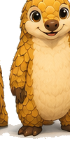

Hace una década, la impresión 3D era símbolo de ingeniería fría y funcional. Hoy, artistas emergentes la explotan para crear esculturas, instalaciones interactivas y obras que desafían la física y la imaginación. La tecnología se volvió arte.
La impresión 3D como herramienta artística
Liberar la creatividad de restricciones físicas
Un escultor tradicional está limitado por el material (mármol, barro, madera). La geometría debe ser posible tallar sin que se quiebre. Pero un artista 3D puede diseñar formas imposibles: estructuras sin apoyo aparente, cavidades que flotan en el aire, detalles microscópicos que ninguna herramienta manual podría lograr.
El ejemplo más extremo: "The Great Wave" reimaginada por el artista 3D brasileño Dario Robleto. Reconstruyó la obra clásica japonesa en 3D con tal detalle que parece estar en movimiento perpetuo.
Reproducción y preservación
Los museos ahora usan impresoras 3D para crear réplicas exactas de artefactos antiguos. Visitantes pueden tocar una copia de 1000 años que es indistinguible del original. Arqueólogos digitalizan reliquias en 3D para preservarlas cuando los originales se deterioran.
El Museo del Louvre imprime réplicas de sus piezas frágiles para que estudiantes de arte puedan aprender tocándolas sin dañar obras irreemplazables.
Ejemplos de proyectos artísticos reales
Joyas imposibles
Diseñadores de joyería imprimieron en resina delgada crean anillos, pendientes y brazaletes con geometrías que serían imposibles de lograr en oro o plata. Formas fractal, estructuras que parecen imposibles pero son perfectamente viables en resina.
La diseñadora holandesa Neri Oxman crea joyas que parecen organismos vivos — ramificaciones que se bifurcan naturalmente, texturas que evolucionan. Sería imposible esculpir a mano.
Esculturas cinéticas
Se pueden imprimir mecanismos funcionales — gears, bisagras, articulaciones — todos en una sola pieza sin ensamblar nada. Artistas crearon figuras que "danzan" con movimientos fluidos imposibles con técnicas tradicionales.
Luz interactiva
Estructuras impresas que trabajan con luz proyectada. Las sombras cambian según el ángulo. Algunos artistas imprimen capas translúcidas que crean un efecto holográfico cuando se iluminan.
Instalaciones a escala
Escalas que irían desde milímetros hasta metros. Una escultura de 10cm impresa en resina con detalles de 0.1mm. Ampliada a 3 metros en hormigón para una plaza pública. La impresión 3D permite diseñar primero en escala pequeña, iterar, perfeccionar, y luego escalar.
Dato curioso
En 2018, la primera "David" de Miguel Ángel impreso en 3D se exhibió en Italia. Costó una fracción del original pero capturó cada grieta y detalle. Los visitantes pueden fotografiarla libremente — algo prohibido con el mármol original.
Aplicaciones sociales y accesibles
Arte táctil para invidentes
Artistas imprimen réplicas de cuadros famosos en 3D de forma que las personas ciegas puedan "sentir" la composición. Texturas diferentes representan colores. Relieves representan líneas. Una persona ciega puede ahora experimentar arte visual de forma que antes era completamente imposible.
El proyecto "Unseen Art" traduce pinturas de museos a esculturas táctiles. 500+ obras disponibles para tocar.
Prótesis personalizadas y artísticas
Más allá de lo funcional, diseñadores crean prótesis artísticas. Brazos que se iluminan con LEDs. Manos con patrones geométricos. Los usuarios reportan que el arte en su prótesis las hace sentir poderosas y expresivas, no discapacitadas.
Educación y creatividad en escuelas
Niños diseñan sus propios juguetes, esculturas, dioramas en 3D. La barrera de entrada es cero — necesitan un programa (muchos gratis como Tinkercad) y acceso a impresoras (cada vez más disponibles en escuelas).
El futuro: bioimpresión y más
Impresión 3D de biomateriales
Ya existen experimentos imprimiendo con algas, hongos y materiales biodegradables. Artistas están creando esculturas "vivas" que crecen, evolucionan y se descomponen con el tiempo. No es una obra estática — es un organismo.
Impresión de colores y gradientes
Las impresoras 3D a color (como Stratasys J850) pueden mezclar colores pixel a pixel. Una escultura puede tener miles de tonos en una sola impresión, abriendo posibilidades de gradientes suaves y efectos imposibles con pintura.
¿Quieres explorar impresión 3D artística?
El primer paso es diseñar un concepto, aunque sea pequeño. No necesita ser funcional — puede ser completamente absurdo. Luego imprímelo en resina para máxima precisión si tienes detalles finos, o en PLA si es grande. Experimenta, falla, itera.
Artistas como Dario Robleto, Neri Oxman y Christoph Bader empezaron así — jugando, explorando, rompiendo límites. La impresión 3D es su pincel ahora.

¿Tienes una idea artística?
En 3DSnapTech imprimimos proyectos creativos con resina y FDM. Asesoramos en escalas, materiales y acabados.